Previous slide Next slide Toggle fullscreen Open presenter view
CEN429 Secure Programming · Week 12
Security Certifications and Penetration Test Planning
CEN429 Secure Programming — Week 12
Asst. Prof. Dr. Uğur CORUH · 04.12.2026
RTEU Computer Engineering · 2026-2027 Fall
CEN429 Secure Programming · Week 12
Today's Plan (3 Hours)
Hour
Section
Topic
1
1–2
Why independent evaluation · the standards landscape · the evaluation process (13 steps)
2
3–5
Vulnerability-assessment methods · the tests the standards demand · attack potential and rating
3
6–9
Finding→recommendation→action and impact analysis · penetration test plan · reporting · project (S16)
Learning outcome (LO.6 / LO.7): explain the steps of independent evaluation · write a penetration test plan · rate a finding (attack potential, CVSS)
RTEU Computer Engineering · 2026-2027 Fall
CEN429 Secure Programming · Week 12
Where Does This Week Fit?
Weeks 4–11: we learned the protections (memory, crypto, obfuscation, whitebox…)This week (12): but do these protections really work ? How are they tested ?Week 13: security requirements and the compliance matrix
Today: independent evaluation + penetration test planning.
RTEU Computer Engineering · 2026-2027 Fall
CEN429 Secure Programming · Week 12
⚠️ Ethical and Legal Framework (From the Start)
A penetration test cannot be done without written permission and a contract with an explicitly defined scope.
Unauthorized testing is a crime , whatever the intent.
In this course, testing is done only on your own project.
All data is synthetic ; there is no real personal data.
RTEU Computer Engineering · 2026-2027 Fall
CEN429 Secure Programming · Week 12
What We Bring from Earlier Weeks
Vulnerability — a weak point that can be abused, e.g., an unbounded buffer (Week 1) Kerckhoffs's principle — security must rest on the secrecy of the key, not on the secrecy of the design (Week 3) Static and dynamic analysis — finding bugs without running the code (static) or while running it with sanitizers (dynamic) (Week 4) Fuzzing — looking for crashes with unexpected/random input (Week 4) CVSS — a scoring system expressing a vulnerability's impact as a standard score (0–10) (Week 2)
This week: we rebuild these concepts in the language of an independent evaluation .
RTEU Computer Engineering · 2026-2027 Fall
CEN429 Secure Programming · Week 12
This Week's Concepts
Each term is defined once, where it first appears in the body; here we only mark where .
Concept
Where
Security evaluation, certification, standard, laboratory
Section 1
TOE, white/black box, the 13-step evaluation process
Section 2
Vulnerability, assessment methods (code review, SAST, DAST, fuzzing)
Section 3
The tests the standards demand
Section 4
Attack potential, CVSS
Section 5
Finding, recommendation, action, security impact analysis, delta assessment
Section 6
Penetration test, penetration test plan, test card
Section 7
Now: why independent evaluation?
RTEU Computer Engineering · 2026-2027 Fall
CEN429 Secure Programming · Week 12
1. Why Independent Evaluation?
RTEU Computer Engineering · 2026-2027 Fall
CEN429 Secure Programming · Week 12
What Is a Security Evaluation?
Security evaluation: an independent party testing a product's security claims.Saying "I am secure" is not enough; evidence and testing are required.
RTEU Computer Engineering · 2026-2027 Fall
CEN429 Secure Programming · Week 12
What Is Certification?
Certification: an authorized party documenting that a product/organisation complies with a given standard .If the evaluation succeeds, a certificate is issued.
RTEU Computer Engineering · 2026-2027 Fall
CEN429 Secure Programming · Week 12
Who Is the Laboratory (Evaluator)?
Evaluation laboratory: the independent, accredited organisation that tests the product.It is not the organisation that develops the product (for impartiality).
It has access to all source code and documentation.
RTEU Computer Engineering · 2026-2027 Fall
CEN429 Secure Programming · Week 12
What Is a Standard?
Standard: a common set of rules defining what should be done and how.Examples: ISO/IEC 27001, Common Criteria, FIPS 140-3, PCI, OWASP MASVS.
Each measures something different (more on this shortly).
RTEU Computer Engineering · 2026-2027 Fall
CEN429 Secure Programming · Week 12
Independent Evaluation — Diagram
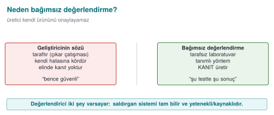
RTEU Computer Engineering · 2026-2027 Fall
CEN429 Secure Programming · Week 12
"My Code Is Secure" Is Not Enough
A developer can be blind to their own code.
Conflict of interest: you want to say "my product is secure."
That's why third-party verification is required.
RTEU Computer Engineering · 2026-2027 Fall
CEN429 Secure Programming · Week 12
What Does Trust Rest On?
Not on claims, but on evidence and testing .
An independent laboratory: impartial, accredited, expert.
Result: a certificate or a finding list .
RTEU Computer Engineering · 2026-2027 Fall
CEN429 Secure Programming · Week 12
A Short History — Evaluation and Certification
1985 — TCSEC ("Orange Book"): the first formal evaluation criteria1991–93 — European ITSEC , Canadian CTCPEC 1999 — Common Criteria (ISO/IEC 15408) ; the EAL scale comes from here2001 OWASP · PTES/NIST SP 800-115 · 2005→2023 CVSS (v2→v4.0)2010s — MASVS/MASTG (mobile), ETSI EN 303 645 (IoT)
One sentence: a vendor cannot approve its own product — independent, evidence-based evaluation.
RTEU Computer Engineering · 2026-2027 Fall
CEN429 Secure Programming · Week 12
The Evaluator's Two Assumptions
White-box: it has access to all source code and documents.Platform is untrusted: the environment the product runs on is exposed to the attacker.
RTEU Computer Engineering · 2026-2027 Fall
CEN429 Secure Programming · Week 12
White-Box vs. Black-Box Testing
White-box testing: the tester has access to source code + documentation .Black-box testing: the tester accesses the system only from the outside (like a user).The evaluator usually works white-box (sees everything).
RTEU Computer Engineering · 2026-2027 Fall
CEN429 Secure Programming · Week 12
The Consequence of These Assumptions
A protection merely existing is not enough.
The evaluator asks: how easily is it bypassed?
Not a single protection,
but the time it takes to bypass protections together .
RTEU Computer Engineering · 2026-2027 Fall
CEN429 Secure Programming · Week 12
In Good Design the Attacker Is Forced
A single protection → bypassed in a single step.
Layered protection → the attacker must chain the layers.
This is the evaluation counterpart of the "layered defence" idea from weeks 9 and 11.
RTEU Computer Engineering · 2026-2027 Fall
CEN429 Secure Programming · Week 12
The Standards Landscape
RTEU Computer Engineering · 2026-2027 Fall
CEN429 Secure Programming · Week 12
Standards Map — Diagram
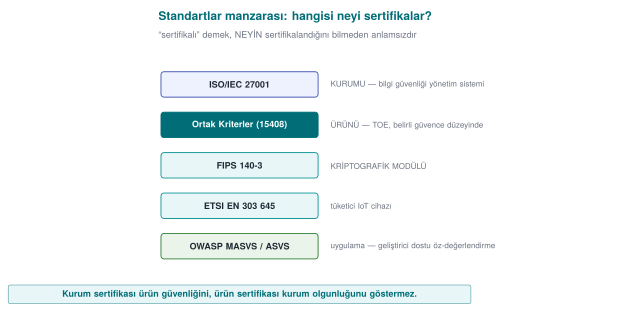
RTEU Computer Engineering · 2026-2027 Fall
CEN429 Secure Programming · Week 12
Why Are There So Many Standards?
Each standard secures a different thing:
the organisation, the product, or the crypto module?
which domain (IoT, payments, mobile)?
Knowing which one your project is closest to tells you which tests to prioritise.
RTEU Computer Engineering · 2026-2027 Fall
CEN429 Secure Programming · Week 12
ISO/IEC 27001
What: certifies the organisation (its processes).Not the product, but the organisation's information security management.
Asks for control evidence instead of testing.
RTEU Computer Engineering · 2026-2027 Fall
CEN429 Secure Programming · Week 12
Common Criteria (ISO/IEC 15408)
What: certifies the product .Source review + vulnerability analysis + penetration test + attack potential .
Depth increases with EAL (week 13).
RTEU Computer Engineering · 2026-2027 Fall
CEN429 Secure Programming · Week 12
FIPS 140-3
What: the cryptographic module .Algorithm validation, self-tests.
Covers only the module , not the whole application (week 13).
RTEU Computer Engineering · 2026-2027 Fall
CEN429 Secure Programming · Week 12
ETSI EN 303 645
What: baseline IoT security requirements.A light, broad-coverage baseline.
E.g., "store sensitive parameters securely".
RTEU Computer Engineering · 2026-2027 Fall
CEN429 Secure Programming · Week 12
EMVCo / PCI
What: payment products.Functional conformance + laboratory penetration test + attack potential.
Strict and detailed.
RTEU Computer Engineering · 2026-2027 Fall
CEN429 Secure Programming · Week 12
OWASP MASVS + MASTG
MASVS: mobile application security requirements .MASTG: the test guide for testing them.The most applicable guide for your project.
RTEU Computer Engineering · 2026-2027 Fall
CEN429 Secure Programming · Week 12
Standards · One Table
Standard
What It Certifies
ISO/IEC 27001
Organisation (process)
Common Criteria
Product (EAL)
FIPS 140-3
Crypto module
ETSI EN 303 645
IoT baseline
EMVCo / PCI
Payments
OWASP MASVS/MASTG
Mobile application
RTEU Computer Engineering · 2026-2027 Fall
CEN429 Secure Programming · Week 12
Organisation or Product? (Often Confused)
ISO/IEC 27001: organisation.Common Criteria: product.
An organisation can hold ISO 27001 while its product has not been evaluated; the reverse is also true.
RTEU Computer Engineering · 2026-2027 Fall
CEN429 Secure Programming · Week 12
Section 1 — Quick Check
Why isn't it enough for the developer to say "it's secure"?
The evaluator's two assumptions?
What do ISO 27001 and Common Criteria certify separately?
RTEU Computer Engineering · 2026-2027 Fall
CEN429 Secure Programming · Week 12
Section 1 — Answers
The developer is a party with interest (conflict of interest), is blind to its own mistakes, and has no evidence in hand. An independent evaluator verifies with evidence.
(1) The attacker fully knows the system (Kerckhoffs), (2) the attacker is skilled and resourced . Assume the worst case.
ISO 27001 certifies the organisation/process (information security management), Common Criteria certifies the product (TOE) at a given assurance level.
RTEU Computer Engineering · 2026-2027 Fall
CEN429 Secure Programming · Week 12
2. The Evaluation Process: 13 Steps
RTEU Computer Engineering · 2026-2027 Fall
CEN429 Secure Programming · Week 12
The Evaluation Process — Diagram
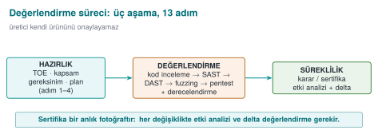
RTEU Computer Engineering · 2026-2027 Fall
CEN429 Secure Programming · Week 12
Three Phases
The process is split into three phases:
Preparation (1–4)Evaluation (5–8)Result and continuity (9–13)
Now let's take them one by one.
RTEU Computer Engineering · 2026-2027 Fall
CEN429 Secure Programming · Week 12
Preparation (Steps 1–4)
RTEU Computer Engineering · 2026-2027 Fall
CEN429 Secure Programming · Week 12
Preparation Steps — Diagram
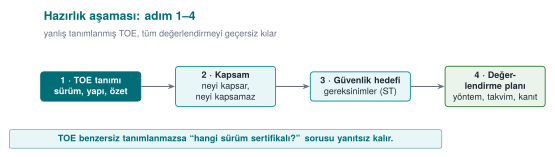
RTEU Computer Engineering · 2026-2027 Fall
CEN429 Secure Programming · Week 12
Step 1 · Target of Evaluation (TOE)
What is to be evaluated is defined uniquely .
A version number is not enough : binary + source + hash value/label.
Out-of-scope components are written down.
In your project: S0, S1 (version identity, week 1).
RTEU Computer Engineering · 2026-2027 Fall
CEN429 Secure Programming · Week 12
TOE Identity — Diagram
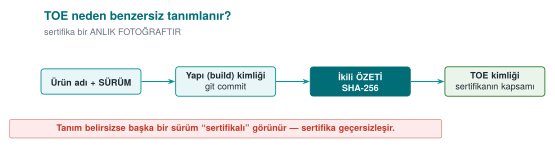
RTEU Computer Engineering · 2026-2027 Fall
CEN429 Secure Programming · Week 12
Step 1 · Why Unique?
The report is only valid for the binary examined .
"v1.2" can point to two different builds.
The hash value pins down exactly which file it is.
RTEU Computer Engineering · 2026-2027 Fall
CEN429 Secure Programming · Week 12
Step 2 · Delivery of Documents
Source code, API documentation, security guide .
Debug and release builds.
Delivered over a secure channel.
In your project: your repo + your guide.
RTEU Computer Engineering · 2026-2027 Fall
CEN429 Secure Programming · Week 12
Step 3 · Requirement Template
The standard's numbered requirements.
For each: the text, test coverage , the developer's compliance rationale + document reference .
Status: met / transferred / not met.
In your project: S17 compliance matrix (week 13).
RTEU Computer Engineering · 2026-2027 Fall
CEN429 Secure Programming · Week 12
Step 4 · Workshop
Which control meets which requirement?
How will gaps be closed?
A document-update plan comes out of it.
RTEU Computer Engineering · 2026-2027 Fall
CEN429 Secure Programming · Week 12
Evaluation (Steps 5–8)
RTEU Computer Engineering · 2026-2027 Fall
CEN429 Secure Programming · Week 12
Step 5 · Source Code Review
All source is reviewed in a white-box context.
Dangerous patterns, incorrect crypto, leak points.
In your project: week 4 CERT, static analysis.
RTEU Computer Engineering · 2026-2027 Fall
CEN429 Secure Programming · Week 12
Step 5 · Where Does the Evaluator Look?
Is crypto usage correct? Where does the key come from/go to?
Input validation, memory (bounds, overflow, UAF).
Secret leakage in logs/errors.
Control-bypass paths.
RTEU Computer Engineering · 2026-2027 Fall
CEN429 Secure Programming · Week 12
Step 6 · Vulnerability Analysis
Assets and the key hierarchy are extracted.
For every asset: "where, in what state, is it exposed?"
Output: finding list + penetration test plan .
In your project: S4, S5, S16.
RTEU Computer Engineering · 2026-2027 Fall
CEN429 Secure Programming · Week 12
Step 7 · Penetration Test
Every item in the plan is carried out with the eight-field template.
Every finding is rated with attack potential .
Output: test result tables.
In your project: S16.
RTEU Computer Engineering · 2026-2027 Fall
CEN429 Secure Programming · Week 12
Penetration Test Plan — Diagram
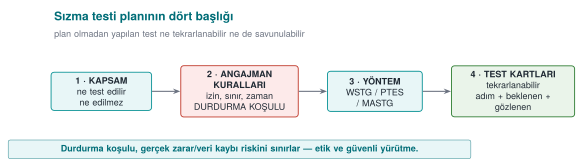
RTEU Computer Engineering · 2026-2027 Fall
CEN429 Secure Programming · Week 12
The product's standard functions (e.g., payment flows) are tested with the scheme's test suite .
Output: execution report.
In your project: unit tests.
RTEU Computer Engineering · 2026-2027 Fall
CEN429 Secure Programming · Week 12
Result and Continuity (Steps 9–13)
RTEU Computer Engineering · 2026-2027 Fall
CEN429 Secure Programming · Week 12
Step 9 · Findings and Fixes
For every finding, the laboratory produces a recommendation , the developer produces an action .
Some findings close as "not a security issue, a good-practice suggestion".
In your project: week 7 finding–action list.
RTEU Computer Engineering · 2026-2027 Fall
CEN429 Secure Programming · Week 12
Finding Cycle — Diagram
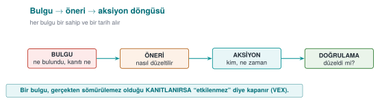
RTEU Computer Engineering · 2026-2027 Fall
CEN429 Secure Programming · Week 12
Step 10 · Security Impact Analysis
When fixes produce a new version:
change category (new feature / improvement / bug fix)
affected files
security impact
In your project: S13, change management.
RTEU Computer Engineering · 2026-2027 Fall
CEN429 Secure Programming · Week 12
Impact Analysis ↔ Delta — Diagram
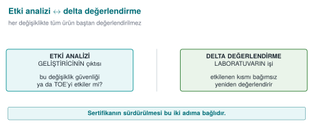
RTEU Computer Engineering · 2026-2027 Fall
CEN429 Secure Programming · Week 12
Step 11 · Delta Assessment
Only the changed part is re-evaluated.
The laboratory asks for: marked-up documents, impact analysis, file list, the new TOE identity .
RTEU Computer Engineering · 2026-2027 Fall
CEN429 Secure Programming · Week 12
Step 12 · Trade-Off and Residual Risk
The cost of every protection is measured.
Decisions are justified.
Residual risk is written explicitly. In your project: week 1 trade-off record.
RTEU Computer Engineering · 2026-2027 Fall
CEN429 Secure Programming · Week 12
Step 13 · Change Management
Baseline → request → classification → approval → development and testing → release → verification.
RTEU Computer Engineering · 2026-2027 Fall
CEN429 Secure Programming · Week 12
13 Steps · At a Glance
Preparation: 1 TOE · 2 documents · 3 requirement template · 4 workshopEvaluation: 5 code review · 6 vulnerability · 7 penetration · 8 functionalResult: 9 finding · 10 impact · 11 delta · 12 residual risk · 13 change
RTEU Computer Engineering · 2026-2027 Fall
CEN429 Secure Programming · Week 12
End-to-End Example · NotKasa v1.0.0
A synthetic mobile application: "NotKasa" (keeps encrypted notes locally).
Encrypts notes with AES.
Downloads the key from the server.
Logging is off in the release build.
We'll evaluate this product start to finish.
RTEU Computer Engineering · 2026-2027 Fall
CEN429 Secure Programming · Week 12
Applying Step 1 · TOE
TOE: NotKasa v1.0.0, notkasa-1.0.0.apkHash (SHA-256): a1b2… (synthetic)
Source: notkasa/ repository, tag v1.0.0
Out of scope: server infrastructure
RTEU Computer Engineering · 2026-2027 Fall
CEN429 Secure Programming · Week 12
Steps 2–3 · Documents and Requirement Template
Delivered: source, security guide, both debug and release APKs.
Requirement template: MASVS items numbered; each with status + evidence reference.
RTEU Computer Engineering · 2026-2027 Fall
CEN429 Secure Programming · Week 12
Step 5 · Code Review Findings (Synthetic)
B-01: the key is erased in an intermediate variable, but the tmp buffer is not erased (it stays in memory).B-02: the error message on a decode failure leaks internal detail.
RTEU Computer Engineering · 2026-2027 Fall
CEN429 Secure Programming · Week 12
Step 6 · Vulnerability Analysis
Assets: note content (C/I), data key (C/I), server token.
Question: where is each asset exposed?
Output: a penetration test plan (below).
RTEU Computer Engineering · 2026-2027 Fall
CEN429 Secure Programming · Week 12
Step 7 · Penetration Test Card (Summary)
T-01 plaintext on disk? → pass (encrypted)T-02 does the key stay in memory? → fail (B-01 confirmed)T-03 does the error message leak? → fail (B-02)
RTEU Computer Engineering · 2026-2027 Fall
CEN429 Secure Programming · Week 12
Step 7 · T-02 Rating
Time: low · expertise: moderate · knowledge: public · equipment: free (memory dump)
→ moderate-low attack potential
CVSS: medium (confidentiality impact)
RTEU Computer Engineering · 2026-2027 Fall
CEN429 Secure Programming · Week 12
Step 9 · Finding–Action
Finding
Recommendation
Action
B-01 key residue
Erase tmp after use
Added (memset-like)
B-02 error leak
Return a single generic error
Fixed
RTEU Computer Engineering · 2026-2027 Fall
CEN429 Secure Programming · Week 12
Steps 10–11 · Impact Analysis + Delta
The fixes produced v1.0.1.
Impact analysis: 2 files changed, both on the memory/error path; the crypto flow did not change.Delta: only these two files + the new TOE identity (notkasa-1.0.1.apk) were re-evaluated.
RTEU Computer Engineering · 2026-2027 Fall
CEN429 Secure Programming · Week 12
Step 12 · Residual Risk
If the device is rooted, a memory dump is still possible.
Mitigation: short-lived key + server-side risk check.
Written explicitly.
RTEU Computer Engineering · 2026-2027 Fall
CEN429 Secure Programming · Week 12
Case · Takeaway
The 13 steps aren't abstract; they're concrete in a small product.
Evaluation is a cycle : find → fix → re-evaluate.
Your project is a scaled-down version of this.
RTEU Computer Engineering · 2026-2027 Fall
CEN429 Secure Programming · Week 12
Where Does the Guide Fit?
The security guide that is the source of this course's "How it's done in the field" notes = the document delivered at step 2 .
Its primary reader: the laboratory .
Every section opens with a requirement block ("requirement — status").
The guide in your project is a scaled-down version of this.
RTEU Computer Engineering · 2026-2027 Fall
CEN429 Secure Programming · Week 12
Section 2 — Quick Check
The three phases, and roughly which steps?
Why is the TOE defined uniquely?
The relationship between impact analysis and delta assessment?
RTEU Computer Engineering · 2026-2027 Fall
CEN429 Secure Programming · Week 12
Section 2 — Answers
Preparation (TOE, scope, requirements, plan · 1–4), Evaluation (apply method, test, rate), Result (report, compliance, decision, ongoing delta maintenance).To pin down precisely what is certified: version, build, hash, configuration. Otherwise a different version can appear "certified."
On a change, first the impact analysis (does it affect security?); if it does, not the whole product but only the delta (the changed part) is re-evaluated.
RTEU Computer Engineering · 2026-2027 Fall
CEN429 Secure Programming · Week 12
3. Vulnerability-Assessment Methods
RTEU Computer Engineering · 2026-2027 Fall
CEN429 Secure Programming · Week 12
What Is a Vulnerability?
Vulnerability: a weak point in a system that can be abused (e.g., an unbounded buffer).Vulnerability + abuse = a security incident.
RTEU Computer Engineering · 2026-2027 Fall
CEN429 Secure Programming · Week 12
Evaluation Methods — Diagram
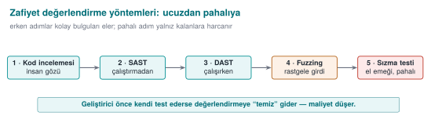
RTEU Computer Engineering · 2026-2027 Fall
CEN429 Secure Programming · Week 12
Purpose
Steps 5–6 of the process require using a set of methods in the right order .
Question: "How do I test my own product before I deliver it?"
RTEU Computer Engineering · 2026-2027 Fall
CEN429 Secure Programming · Week 12
The Right Order: Cheap to Expensive
Source code review (manual)
Static analysis (SAST)
Dynamic analysis (DAST) + sanitizer
Fuzzing
Penetration test
Cheap + broad → expensive + deep.
RTEU Computer Engineering · 2026-2027 Fall
CEN429 Secure Programming · Week 12
Why This Order?
SAST is cheap, scans broadly; but produces false positives.Manual review is expensive; but sees context.Fuzzing requires running the program; finds what no one would think of.Penetration test is the most expensive; comes last.
Clear "easy" findings first with cheap methods → the penetration test can focus on real, combined problems.
RTEU Computer Engineering · 2026-2027 Fall
CEN429 Secure Programming · Week 12
Method 1 · Source Code Review
Finds logic errors that automated tools miss.
A human eye sees context and intent.
RTEU Computer Engineering · 2026-2027 Fall
CEN429 Secure Programming · Week 12
Code Review · Where to Look (1)
Crypto: is the right algorithm/mode/padding used? Where does the key come from/go to/get erased? (weeks 3, 10, 11)
RTEU Computer Engineering · 2026-2027 Fall
CEN429 Secure Programming · Week 12
Code Review · Where to Look (2)
Input/memory: bounds checking, integer overflow, format string, UAF (week 4 CERT).Leakage: sensitive data in logs, internal state in errors.Bypass: a control that can be bypassed with a single branch/return (week 9).
RTEU Computer Engineering · 2026-2027 Fall
CEN429 Secure Programming · Week 12
Method 2 · Static Analysis (SAST)
Scans the source without running it .
Memory errors, dangerous calls, patterns.
Fast; but false positives must be handled.
RTEU Computer Engineering · 2026-2027 Fall
CEN429 Secure Programming · Week 12
Method 3 · Dynamic Analysis (DAST)
Tests the program while running it .
Sanitizers (ASan/UBSan) catch memory-access errors, undefined behaviour.
RTEU Computer Engineering · 2026-2027 Fall
CEN429 Secure Programming · Week 12
Method 4 · Fuzzing
The program is fed unexpected inputs .
Crash/corruption paths are found.
Reveals cases a human would never think of.
RTEU Computer Engineering · 2026-2027 Fall
CEN429 Secure Programming · Week 12
Method 5 · Penetration Test
Combines the methods above, tests exploitability from an attacker's viewpoint.The most expensive; comes last.
We'll plan it in detail in section 5.
RTEU Computer Engineering · 2026-2027 Fall
CEN429 Secure Programming · Week 12
Critical Point: The Developer Goes First
These tools must also be run by the developer , and the results (S16) presented.
The big difference for the evaluator:
"no one has tested this" vs.
"these tools were run, these findings were closed".
This is the counterpart of week 4's secure build pipeline (SAST + sanitizer + fuzz in CI).
RTEU Computer Engineering · 2026-2027 Fall
CEN429 Secure Programming · Week 12
Section 3 — Quick Check
Why do we order the methods cheap to expensive?
What is SAST's weakness?
Why does it matter that the developer tests first?
RTEU Computer Engineering · 2026-2027 Fall
CEN429 Secure Programming · Week 12
Section 3 — Answers
Cheap/automated methods (SAST/DAST) filter out easy findings early; expensive human effort is spent only on what remains → efficient.
SAST doesn't run the code → high false positives , cannot see runtime/configuration/business-logic flaws, doesn't know context.It closes easy findings cheaply (goes clean to the evaluator), lowers cost/delay → evaluation can focus on deep problems.
RTEU Computer Engineering · 2026-2027 Fall
CEN429 Secure Programming · Week 12
4. The Tests the Standards Demand
RTEU Computer Engineering · 2026-2027 Fall
CEN429 Secure Programming · Week 12
Each Standard Emphasises Different Tests
Whichever family your project is closest to, do the tests it expects first.
RTEU Computer Engineering · 2026-2027 Fall
CEN429 Secure Programming · Week 12
Standards · Test Expectations
Standard
Primary Test
ISO/IEC 27001
Process/management audit
Common Criteria
Review + vulnerability + penetration + attack potential
FIPS 140-3
Crypto module testing
ETSI EN 303 645
Baseline requirement verification
EMVCo / PCI
Functional + penetration + attack potential
MASVS/MASTG
Mobile static + dynamic
RTEU Computer Engineering · 2026-2027 Fall
CEN429 Secure Programming · Week 12
Test Methodology Guides
Mature public guides exist for how to run a penetration test:
OWASP WSTG (web)OWASP MASTG (mobile)PTES , NIST SP 800-115 (general process)
These are not an "attack recipe," they are methodology — they make the result repeatable/comparable.
RTEU Computer Engineering · 2026-2027 Fall
CEN429 Secure Programming · Week 12
5. Attack Potential and Finding Rating
RTEU Computer Engineering · 2026-2027 Fall
CEN429 Secure Programming · Week 12
What Is Attack Potential?
Attack potential: how difficult it is to carry out an attack.Scored with factors such as time, expertise, and equipment.
Low potential (an easy attack) = a serious finding.
RTEU Computer Engineering · 2026-2027 Fall
CEN429 Secure Programming · Week 12
Not "Yes/No" but "How Hard?"
A protection merely existing is not enough; how easily it is bypassed is measured.
Common Criteria and payment schemes do this with attack potential .
This is the formal counterpart of week 9's "measuring obfuscation" (potency/resilience) framework.
RTEU Computer Engineering · 2026-2027 Fall
CEN429 Secure Programming · Week 12
The Question: "What Did It Take to Break?"
A finding's severity is decided by the answer to this question.
We score it with five–six factors; the points are summed; the total maps to a resistance level .
RTEU Computer Engineering · 2026-2027 Fall
CEN429 Secure Programming · Week 12
Factor 1 · Elapsed Time
How long did the attack take?
Low score: a day. High score: months.
RTEU Computer Engineering · 2026-2027 Fall
CEN429 Secure Programming · Week 12
Factor 2 · Expertise
What level of skill was required?
Low: an ordinary user. High: a domain expert.
RTEU Computer Engineering · 2026-2027 Fall
CEN429 Secure Programming · Week 12
Factor 3 · Knowledge of the Target
What needed to be known about the product?
Low: publicly available information. High: internal/confidential documents.
RTEU Computer Engineering · 2026-2027 Fall
CEN429 Secure Programming · Week 12
Factor 4 · Window of Opportunity
How much access/how many attempts were needed?
Low: unlimited/remote. High: restricted physical access.
RTEU Computer Engineering · 2026-2027 Fall
CEN429 Secure Programming · Week 12
Factor 5 · Equipment
Which tools were needed?
Low: standard, free. High: specialised, expensive.
RTEU Computer Engineering · 2026-2027 Fall
CEN429 Secure Programming · Week 12
Factors · One Table
Factor
Low
High
Elapsed time
A day
Months
Expertise
Ordinary
Expert
Knowledge of target
Public
Confidential document
Window of opportunity
Unlimited/remote
Restricted physical
Equipment
Free
Specialised/expensive
RTEU Computer Engineering · 2026-2027 Fall
CEN429 Secure Programming · Week 12
Interpretation: Low Total = Serious Finding
High total → the attack is hard → the protection is good.Low total (ordinary user, one hour, free tool) → serious finding .
The logic is the same as week 9's four metrics.
RTEU Computer Engineering · 2026-2027 Fall
CEN429 Secure Programming · Week 12
Worked Example (Synthetic)
"A licence check in the release build depended on a branch that an ordinary-level user, with a free
RTEU Computer Engineering · 2026-2027 Fall
CEN429 Secure Programming · Week 12
Example · Scoring
Time: low · expertise: moderate · knowledge: public · equipment: free
→ low attack potential → serious finding
Recommendation: opaque boolean + random exit (week 9) + server-side check.
RTEU Computer Engineering · 2026-2027 Fall
CEN429 Secure Programming · Week 12
Attack Potential — Five Factors
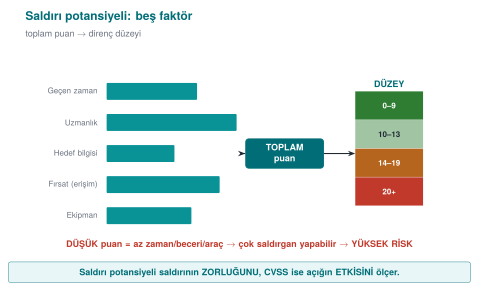
RTEU Computer Engineering · 2026-2027 Fall
CEN429 Secure Programming · Week 12
What Is CVSS?
CVSS (Common Vulnerability Scoring System): expresses a vulnerability's impact as a standard score (0–10).Higher score = more severe impact.
Used for prioritisation.
RTEU Computer Engineering · 2026-2027 Fall
CEN429 Secure Programming · Week 12
Attack Potential ↔ CVSS — Diagram
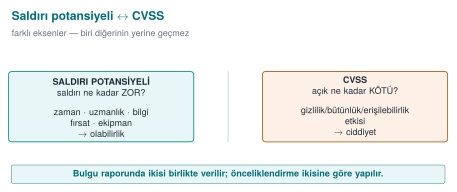
RTEU Computer Engineering · 2026-2027 Fall
CEN429 Secure Programming · Week 12
What Does CVSS Add?
Attack potential: "how hard is it to break?"
CVSS: "how big is this vulnerability's impact?"
The two complement each other.
RTEU Computer Engineering · 2026-2027 Fall
CEN429 Secure Programming · Week 12
CVSS · Likelihood vs. Impact
One weighs likelihood (the attack's difficulty), the other impact (loss of confidentiality/integrity/availability).
Both are usually given together in the report.
Prioritisation is based on both.
RTEU Computer Engineering · 2026-2027 Fall
CEN429 Secure Programming · Week 12
Section 5 — Quick Check
The five factors of attack potential?
Why is a low attack potential a serious finding?
What do attack potential and CVSS each measure?
RTEU Computer Engineering · 2026-2027 Fall
CEN429 Secure Programming · Week 12
Section 5 — Answers
Elapsed time · expertise · knowledge of the target · opportunity (access) · equipment. It means the exploit can be done with little time/skill/tools → many more attackers can do it → a broad, likely threat → high risk.
Attack potential measures the attack's difficulty/cost ; CVSS measures the vulnerability's severity/impact . Different axes, used together.
RTEU Computer Engineering · 2026-2027 Fall
CEN429 Secure Programming · Week 12
6. Finding → Recommendation → Action and Impact Analysis
RTEU Computer Engineering · 2026-2027 Fall
CEN429 Secure Programming · Week 12
What Is a Finding?
Finding: a problem or improvement point identified during evaluation.Every finding needs: evidence, severity, a recommendation .
RTEU Computer Engineering · 2026-2027 Fall
CEN429 Secure Programming · Week 12
Evaluation Is a Cycle
Not a "pass/fail" stamp, but an improvement cycle .
Four steps for every finding:
RTEU Computer Engineering · 2026-2027 Fall
CEN429 Secure Programming · Week 12
Four Steps
Finding: what the laboratory found (with evidence, repeatable).Recommendation: the suggested direction of the fix.Action: what the developer did (or why not).Closure: some findings close as "not open, a good-practice suggestion".
This cycle → the source of the post-midterm finding–action list (week 7).
RTEU Computer Engineering · 2026-2027 Fall
CEN429 Secure Programming · Week 12
Why Do We Need These?
Fixes produce a new version.
Re-evaluating everything from scratch is expensive .
Two documents come into play (steps 10–11).
RTEU Computer Engineering · 2026-2027 Fall
CEN429 Secure Programming · Week 12
Security Impact Analysis
Classifies changes: new feature / improvement / bug fix.
Lists affected files.
Writes the security impact of each change.
The developer's output.
RTEU Computer Engineering · 2026-2027 Fall
CEN429 Secure Programming · Week 12
Delta Assessment
Based on this document, re-evaluates only the changed part .
Asks for: marked-up documents, change list, file list, new TOE identity .
The laboratory's job.
RTEU Computer Engineering · 2026-2027 Fall
CEN429 Secure Programming · Week 12
⚠️ Do Not Confuse the Two
Impact analysis: documents the change's impact (developer).Delta assessment: re-evaluates only the change (laboratory).
If the version identity/hash is inconsistent, delta cannot be done (the evaluated product becomes ambiguous).
RTEU Computer Engineering · 2026-2027 Fall
CEN429 Secure Programming · Week 12
Section 6 — Quick Check
Whose job is impact analysis, whose is delta?
RTEU Computer Engineering · 2026-2027 Fall
CEN429 Secure Programming · Week 12
Section 6 — Answers
Impact analysis is the developer's job (they initiate the assessment of the change's impact); delta assessment is the evaluator's job (they independently re-review it).
RTEU Computer Engineering · 2026-2027 Fall
CEN429 Secure Programming · Week 12
7. Penetration Test Plan
RTEU Computer Engineering · 2026-2027 Fall
CEN429 Secure Programming · Week 12
What Was a Penetration Test?
An activity that combines the methods from an attacker's viewpoint, planned and permitted .
"Planned" and "permitted" are not optional.
A plan contains at least four headings.
RTEU Computer Engineering · 2026-2027 Fall
CEN429 Secure Programming · Week 12
Heading 1 · Scope
What will and won't be tested is written explicitly.
Which binary/version, which components, which environment (test or production), which data (synthetic only).
Out-of-scope items are also written down (third-party servers, real user data).
RTEU Computer Engineering · 2026-2027 Fall
CEN429 Secure Programming · Week 12
Heading 2 · Rules of Engagement (1)
Written permission and an authorised signature.The test window (date/time).
Permitted and forbidden methods (e.g., excluding those that cause service disruption).
RTEU Computer Engineering · 2026-2027 Fall
CEN429 Secure Programming · Week 12
Heading 2 · Rules of Engagement (2)
Data rule: no real personal data; findings are confidential.
Kill switch: if a critical impact is observed, the test stops, reported immediately.Communication and escalation points.
RTEU Computer Engineering · 2026-2027 Fall
CEN429 Secure Programming · Week 12
Heading 3 · Methodology
Choose a recognised methodology and follow it:
mobile: OWASP MASTG/MASVS
web: OWASP WSTG
general: PTES , NIST SP 800-115
Goal: the result is repeatable and comparable .
RTEU Computer Engineering · 2026-2027 Fall
CEN429 Secure Programming · Week 12
Heading 4 · Test Template
Every test is written with the same eight-field card.
This card is your project's S16 skeleton. Let's look at the fields now.
RTEU Computer Engineering · 2026-2027 Fall
CEN429 Secure Programming · Week 12
Test Card · Fields 1–4
Test ID: a unique numberRelated requirement: which asset/requirement it tests (S17 link)Purpose: what is being verifiedPreconditions: environment, version, data
RTEU Computer Engineering · 2026-2027 Fall
CEN429 Secure Programming · Week 12
Test Card · Fields 5–8
Method/steps: in repeatable formExpected result: what secure behaviour should beObserved result: what happened (with evidence)Decision: attack potential + pass/fail + recommendation
RTEU Computer Engineering · 2026-2027 Fall
CEN429 Secure Programming · Week 12
Test Card · One Table
Field
Content
ID
Unique number
Requirement
Link to S17
Purpose
What is verified
Precondition
Environment, version, data
Steps
Repeatable
Expected
Secure behaviour
Observed
What happened (evidence)
Decision
Attack pot. + pass/fail + recommendation
RTEU Computer Engineering · 2026-2027 Fall
CEN429 Secure Programming · Week 12
Worked Example · Test Card (1)
ID: T-05Requirement: the sensitive record in the local database must be protected with AEAD (S17)Purpose: is the record found in plaintext on disk?
RTEU Computer Engineering · 2026-2027 Fall
CEN429 Secure Programming · Week 12
Worked Example · Test Card (2)
Precondition: release build, a synthetic record insertedSteps: run the application → add a record → scan the database file with stringsExpected: plaintext is not visible
RTEU Computer Engineering · 2026-2027 Fall
CEN429 Secure Programming · Week 12
Worked Example · Test Card (3)
Observed: no plaintext visible (only an encrypted blob) — evidence: output screenshotDecision: pass · attack potential high (an easy attack failed)
The goal isn't to find a flaw, it's to learn to write a proper card .
RTEU Computer Engineering · 2026-2027 Fall
CEN429 Secure Programming · Week 12
Team Activity (In Class)
Each team picks one asset from its own project.
Fills in one test card for it.
15 minutes; then a few cards are shared.
RTEU Computer Engineering · 2026-2027 Fall
CEN429 Secure Programming · Week 12
Card · Crypto Verification
Purpose: are notes really encrypted with AEAD?Step: inspect the encrypted blob's header/tag; is a corrupted tag rejected?Expected: corrupted tag → decryption is rejected.
RTEU Computer Engineering · 2026-2027 Fall
CEN429 Secure Programming · Week 12
Card · Key Lifecycle
Purpose: is the key erased once the job is done?Step: scan memory after the operation.Expected: key bytes are not found.
RTEU Computer Engineering · 2026-2027 Fall
CEN429 Secure Programming · Week 12
Card · Release/Debug Distinction
Purpose: is logging really off in the release build?Step: search the release APK with strings for the log string.Expected: the log string is absent.
RTEU Computer Engineering · 2026-2027 Fall
CEN429 Secure Programming · Week 12
Card · Upgrade Safety
Purpose: can an old signed version be restored?Step: try installing a lower version.Expected: the downgrade is rejected.
RTEU Computer Engineering · 2026-2027 Fall
CEN429 Secure Programming · Week 12
Rule When Writing Cards
Every card must be repeatable (someone else must be able to follow the same steps).
Every card is linked to a requirement (S17).
The "Observed" field is filled with evidence .
RTEU Computer Engineering · 2026-2027 Fall
CEN429 Secure Programming · Week 12
Section 7 — Quick Check
The plan's four headings?
Why does the "kill switch" exist?
Which field of the test card links to S17?
RTEU Computer Engineering · 2026-2027 Fall
CEN429 Secure Programming · Week 12
Section 7 — Answers
Scope · rules (RoE) · methodology · test cards (+ kill switch, reporting).To limit real harm/data loss/disruption risk; at a defined threshold the test stops → safe and ethical execution.
The test card's result/requirement-met field → links as evidence to the S17 compliance matrix .
RTEU Computer Engineering · 2026-2027 Fall
CEN429 Secure Programming · Week 12
8. Reporting
RTEU Computer Engineering · 2026-2027 Fall
CEN429 Secure Programming · Week 12
The Report's Four Sections — Diagram
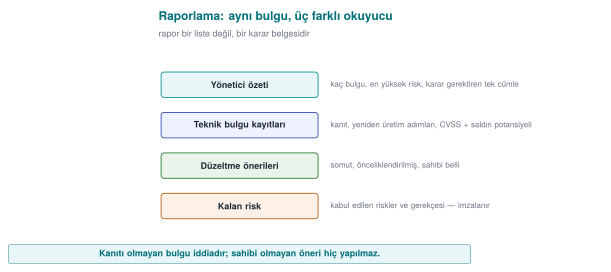
RTEU Computer Engineering · 2026-2027 Fall
CEN429 Secure Programming · Week 12
A Good Report = a Decidable Document
Not a list of "you failed."
The reader must be able to decide what to do .
RTEU Computer Engineering · 2026-2027 Fall
CEN429 Secure Programming · Week 12
Report Sections (1)
Executive summary: overall status for the non-technical reader + the three most critical findings.Methodology and scope: what was tested, what wasn't, with which methodology.
RTEU Computer Engineering · 2026-2027 Fall
CEN429 Secure Programming · Week 12
Report Sections (2)
Findings: each with evidence + attack potential + CVSS + recommendation.Finding–action table: the developer's response, closure.Residual risk: what wasn't closed/was transferred, with justification.
RTEU Computer Engineering · 2026-2027 Fall
CEN429 Secure Programming · Week 12
Critical-Reading Exercise
Read a short finding text together:
Was the attack potential rated correctly?
Is the recommendation actionable?
Does the "met" row have evidence ?
This is a rehearsal for reading the compliance matrix in week 13.
RTEU Computer Engineering · 2026-2027 Fall
CEN429 Secure Programming · Week 12
9. Term Project: This Week (S16)
RTEU Computer Engineering · 2026-2027 Fall
CEN429 Secure Programming · Week 12
Project · S16 (Test Plan + Results) — 1
1. Write eight-field test cards for the two–three most critical assets/requirements (linked to S17).
RTEU Computer Engineering · 2026-2027 Fall
CEN429 Secure Programming · Week 12
Project · S16 — 2
2. Methodology: state which methodology (MASTG / WSTG / PTES / NIST SP 800-115) you're basing it on.
RTEU Computer Engineering · 2026-2027 Fall
CEN429 Secure Programming · Week 12
Project · S16 — 3
3. Results: run the tests and write the observed results .
At the final, a plan is not expected, a result is.
RTEU Computer Engineering · 2026-2027 Fall
CEN429 Secure Programming · Week 12
Project · S16 — 4, 5
4. Finding–action: pour your midterm feedback into a table.
5. Residual risk: write the risks you didn't close and why.
RTEU Computer Engineering · 2026-2027 Fall
CEN429 Secure Programming · Week 12
⚠️ Ethics (Again)
Test only on your own project and systems you're authorised for.
Unauthorised testing is a crime.
All data is synthetic ; no real secrets/personal data in the repo.
RTEU Computer Engineering · 2026-2027 Fall
CEN429 Secure Programming · Week 12
Common Mistakes · Summary
Mistake
Section
A plan but no result — assuming "we will test" is enough
9 (S16)
"Met" without evidence — no evidence reference in the compliance matrix2 (S17)
Version inconsistency — the guide and the code are at different versions2 (TOE)
Residual risk left empty 6
Midterm feedback ignored
6 / 9
Real secrets/personal data in the repoEthical framework
Each row is a violation of that section's discipline — go back and re-read the source.
RTEU Computer Engineering · 2026-2027 Fall
CEN429 Secure Programming · Week 12
10. Self-Check
RTEU Computer Engineering · 2026-2027 Fall
CEN429 Secure Programming · Week 12
Question 1
Summarise the 13 steps in three phases.
Answer: Preparation (TOE, documents, requirement template, workshop) → Evaluation (code review, vulnerability, penetration, functional) → Result (finding, impact analysis, delta, residual risk, change management).
RTEU Computer Engineering · 2026-2027 Fall
CEN429 Secure Programming · Week 12
Question 2
The evaluator's two assumptions? What follows from them?
Answer: (1) white-box — full source/document access; (2) the platform is untrusted. Consequence: a protection existing is not enough, how easily it is bypassed is measured.
RTEU Computer Engineering · 2026-2027 Fall
CEN429 Secure Programming · Week 12
Question 3
Why do we order the methods cheap to expensive?
Answer: Cheap/broad methods (SAST) clear easy findings; the expensive/deep method (pentest) can then focus on real, combined problems. Time and cost efficiency.
RTEU Computer Engineering · 2026-2027 Fall
CEN429 Secure Programming · Week 12
Question 4
What do ISO 27001 and Common Criteria certify separately?
Answer: ISO 27001 certifies the organisation (process), Common Criteria the product . One does not require the other.
RTEU Computer Engineering · 2026-2027 Fall
CEN429 Secure Programming · Week 12
Question 5
The five factors of attack potential? Why is a low score serious?
Answer: time, expertise, knowledge of the target, window of opportunity, equipment. A low total = an easy attack = a serious finding .
RTEU Computer Engineering · 2026-2027 Fall
CEN429 Secure Programming · Week 12
Question 6
What do attack potential and CVSS each measure? Why together?
Answer: Attack potential measures likelihood (difficulty), CVSS measures impact (loss of C/I/A). Both are given together for prioritisation.
RTEU Computer Engineering · 2026-2027 Fall
CEN429 Secure Programming · Week 12
Question 7
The finding–recommendation–action cycle. How can a finding close as "not open"?
Answer: The laboratory produces a recommendation, the developer produces an action. Some findings close, with justification, as a good-practice suggestion , not a security vulnerability.
RTEU Computer Engineering · 2026-2027 Fall
CEN429 Secure Programming · Week 12
Question 8
The difference between impact analysis and delta assessment? Whose job is each?
Answer: Impact analysis documents the change's impact (developer); delta re-evaluates only the change (laboratory).
RTEU Computer Engineering · 2026-2027 Fall
CEN429 Secure Programming · Week 12
Question 9
The four headings of a penetration test plan?
Answer: scope, rules of engagement, methodology, test template. Each makes the result legitimate, repeatable, and safe.
RTEU Computer Engineering · 2026-2027 Fall
CEN429 Secure Programming · Week 12
Question 10
Why does a "kill switch" exist in the rules of engagement?
Answer: If a critical/unforeseen impact is observed, the test stops immediately and is reported; it limits harm and legal risk.
RTEU Computer Engineering · 2026-2027 Fall
CEN429 Secure Programming · Week 12
Question 11
Which field of the test card links to S17?
Answer: the "related requirement" field — every test is tied to a requirement/asset, tracked with the compliance matrix (S17).
RTEU Computer Engineering · 2026-2027 Fall
CEN429 Secure Programming · Week 12
Question 12
What does it mean that at the final S16 needs "results," not a "plan"?
Answer: Writing a test plan is not enough; you must run the tests and present the observed results and finding–action.
RTEU Computer Engineering · 2026-2027 Fall
CEN429 Secure Programming · Week 12
Glossary (1)
Term
Meaning
TOE
The exact object evaluated (unique)
SAST/DAST
Static / dynamic testing
Fuzzing
Finding crashes with random input
Penetration test
Permitted, planned attacker-view testing
Attack potential
Difficulty of breaking it
RTEU Computer Engineering · 2026-2027 Fall
CEN429 Secure Programming · Week 12
Glossary (2)
Term
Meaning
CVSS
Vulnerability impact score
Finding–action
Laboratory recommendation → developer response
Impact analysis
Security impact of a change (developer)
Delta assessment
Re-evaluating only the change (laboratory)
Rules of engagement
The permission/scope/limit contract of a test
RTEU Computer Engineering · 2026-2027 Fall
CEN429 Secure Programming · Week 12
Summary: This Week in One Sentence
Security is not a claim, it is a quality independently tested and measured ; a protection existing is nothow much it withstands is measured in a planned, permitted, and repeatable way.
A good test plan carries trust from claim to evidence .
RTEU Computer Engineering · 2026-2027 Fall
CEN429 Secure Programming · Week 12
11. References and Further Reading
RTEU Computer Engineering · 2026-2027 Fall
CEN429 Secure Programming · Week 12
References
Secure programming technical guide — the delivered document, impact/delta structure, requirement blockOWASP MASVS / MASTG — mobile requirements + test guideOWASP WSTG — web test guidePTES , NIST SP 800-115 — penetration-test methodologyCommon Criteria (ISO/IEC 15408) + attack-potential guidesCVSS
RTEU Computer Engineering · 2026-2027 Fall
CEN429 Secure Programming · Week 12
Next Week
Week 13 — Security Requirements
This week we saw the "requirement template" and the "compliance matrix" inside the process; in week 13 we go into
RTEU Computer Engineering · 2026-2027 Fall
Speaker note: This week we see, step by step, how a product is evaluated at an independent laboratory and how a penetration test is planned.
Speaker note: This week we learn how a product is evaluated at an independent laboratory and how we plan the penetration test of our own product. We'll set the ethical framework right from the start.
Speaker note: Do not skip this slide. The whole week operates within this framework.
Speaker note: Then the 13-step process.
Speaker note: A generalized version of a product being evaluated at a third-party laboratory. We go step by step; we tie every step back to the project.
Speaker note: After the break, methods and rating.
Speaker note: We approach these defensively, with the question "how do I test my own product before I deliver it?"
Speaker note: Then attack potential and rating.
Speaker note: After the break, the penetration test plan.
Speaker note: "Planned" and "permitted" are not optional. A test whose scope/rules aren't written down isn't legitimate.
Speaker note: Then the project and the solved self-check.
Speaker note: Go through the questions one by one, let students answer first, then reveal the answer.